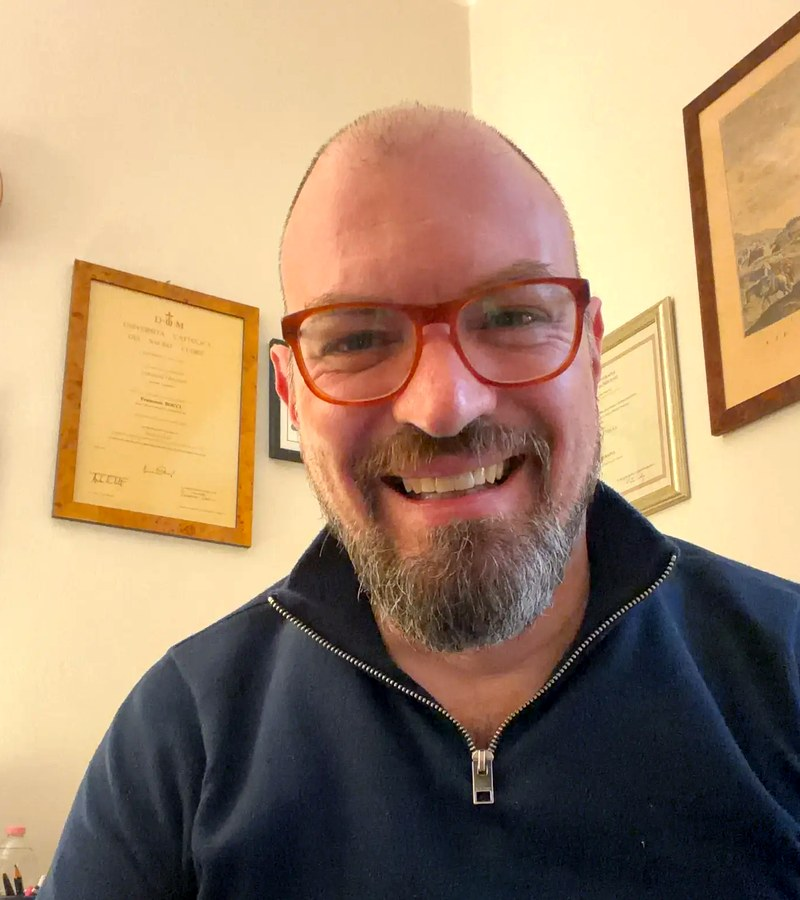
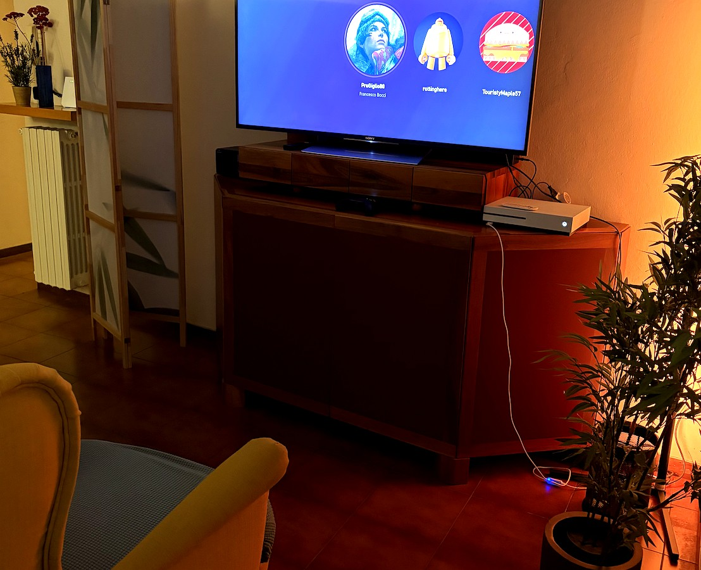
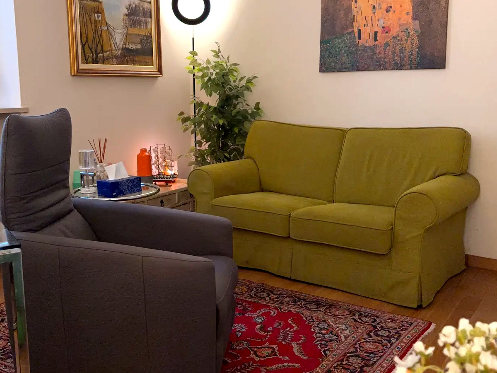
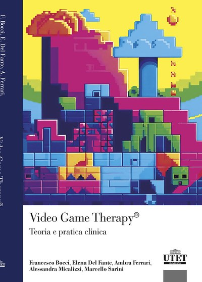
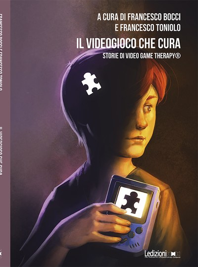
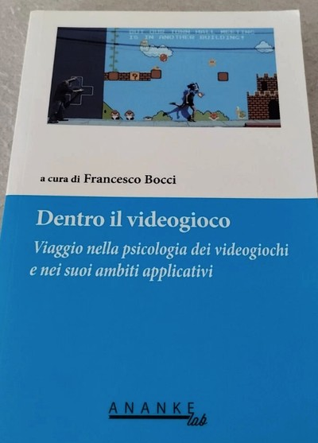
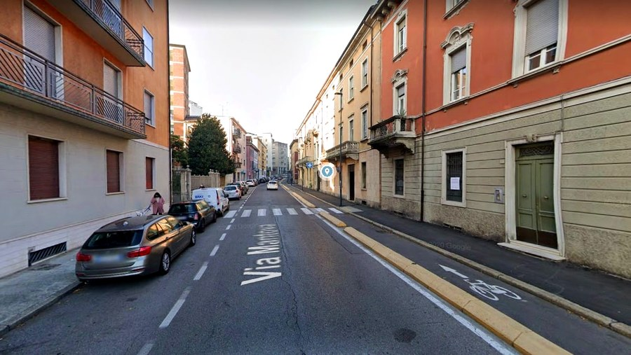

Psicologo & Psicoterapeuta Adleriano
Vent'anni di esperienza clinica tra profondità analitica,
dimensione simbolica e innovazione digitale.
«Ogni essere umano porta in sé una storia unica. Il mio compito è aiutarti a leggerla, comprenderla e riscriverla — con coraggio e consapevolezza.»
— Francesco Bocci
Sono un Psicologo, Psicoterapeuta ed Analista ad orientamento Adleriano con oltre vent'anni di esperienza clinica. Mi sono specializzato in psicoterapia dinamica sul modello della Psicologia Individuale presso l'Istituto Alfred Adler di Milano, e ho conseguito la laurea magistrale in Psicologia Sociale e dello Sviluppo presso l'Università Cattolica del Sacro Cuore di Milano.
Il mio percorso professionale si è sviluppato su tre assi complementari e inscindibili: la dimensione clinica e analitica, radicata nella tradizione adleriana e psicodinamica; la dimensione olistica, simbolica e archetipica, che riconosce nella psiche umana strati profondi di significato; e la dimensione digitale e del gaming, dove ho aperto nuovi orizzonti terapeutici attraverso la Video Game Therapy®.
Per sette anni ho ricoperto il ruolo di Dirigente Psicologo presso l'ASST Franciacorta (CPS di Rovato e DSM di Iseo), coordinando équipe multidisciplinari, gruppi terapeutici e progetti riabilitativi individualizzati. Dal 2020 al 2024 ho ricoperto il ruolo di ex Giudice Onorario presso il Tribunale per i Minorenni di Brescia (2020–2024).
«La psicologia non è solo scienza del disagio: è scienza del potenziale umano. Ogni sintomo è un messaggio, ogni crisi un'opportunità di crescita.»
Sono Responsabile del Centro Clinico "Il Telaio" di Palazzolo sull'Oglio (BS) e svolgo attività clinica anche presso lo studio di Via Mantova a Brescia. Sono Docente e Referente Tirocini della Scuola Adleriana di Psicoterapia Psicodinamica di Brescia dell'Istituto Alfred Adler di Milano.
Sono Terapeuta certificato EMDR (Eye Movement Desensitization and Reprocessing) dall'Associazione EMDR Italia, con Master in Psicotraumatologia. La certificazione EMDR mi consente di trattare traumi semplici e complessi, PTSD, esperienze di abuso e lutto complicato con un approccio evidence-based riconosciuto dall'OMS.

Una psicoterapia che integra rigore scientifico, profondità simbolica e innovazione digitale.
La Psicologia Individuale è un sistema teorico-clinico che considera l'essere umano nella sua globalità bio-psico-sociale. Per Adler, ogni persona costruisce un proprio stile di vita — un sistema di significati, obiettivi e strategie relazionali — che orienta ogni pensiero, emozione e comportamento. La terapia adleriana lavora per portare alla luce questi movimenti profondi, trasformando il disagio in risorsa e la crisi in possibilità di crescita.
L'approccio si distingue per il suo orientamento fortemente relazionale: la relazione terapeutica è il principale agente di cambiamento. Il terapeuta non è un esperto distante, ma un compagno di viaggio che accompagna il paziente nella riscoperta del proprio sentimento sociale — quella capacità di connessione con gli altri che Adler considerava il fondamento della salute psicologica.
«Lo stile di vita è il padrone dei sogni e farà sempre sorgere sentimenti di cui l'individuo ha bisogno.»
— Alfred Adler
Psicoterapia psicodinamica individuale, di coppia ed evolutiva. Analisi del carattere, dello stile di vita, dei sogni e dei ricordi precoci secondo la tradizione adleriana. Integrazione con EMDR per il trattamento dei traumi.
«Ogni sintomo racconta una storia. Il mio lavoro è aiutarti ad ascoltarla senza paura, per poi riscriverla insieme.»
La psiche non si esaurisce nel razionale. Sogni, immagini, simboli e archetipi sono linguaggi profondi che la terapia impara a decifrare. Un approccio che integra la dimensione spirituale e transpersonale dell'esperienza umana, senza mai perdere il rigore clinico.
«L'anima parla per immagini. Imparare a leggere i propri simboli interiori è uno degli atti più coraggiosi che un essere umano possa compiere.»
Il videogioco come strumento clinico, terapeutico e riabilitativo. La Video Game Therapy® — approccio scientifico ideato dal Dott. Bocci — utilizza i videogiochi commerciali per creare spazi terapeutici innovativi, accessibili e profondamente efficaci.
«Il videogioco non è fuga dalla realtà: è uno spazio protetto dove la realtà interiore può finalmente esprimersi, essere osservata e trasformata.»
Percorsi personalizzati per adulti, adolescenti, bambini e coppie, in studio e online.
Percorsi di psicoterapia psicodinamica ad orientamento adleriano per adulti. Lavoro su ansia, depressione, attacchi di panico, disturbi di personalità, traumi, dipendenze e difficoltà relazionali. Ogni percorso è costruito su misura, a partire dall'ascolto profondo della storia personale.
La terapia di coppia lavora per portare alla luce le motivazioni profonde — spesso inconsce — che hanno guidato la scelta del partner e che, nel tempo, alimentano il conflitto. Un percorso di riscoperta reciproca e di costruzione di nuovi significati condivisi.
Interventi clinici per bambini, preadolescenti e adolescenti. Il disagio giovanile viene letto attraverso la lente adleriana come comunicazione di un bisogno inespresso. Il lavoro coinvolge il ragazzo e, quando necessario, l'intero sistema familiare.
Percorsi di psicoterapia integrata che utilizzano il videogioco commerciale come strumento clinico. Indicata per bambini, adolescenti e giovani adulti con difficoltà di regolazione emotiva, isolamento sociale, ansia, traumi e dipendenze. Approccio scientifico ideato e sviluppato dal Dott. Bocci.
Terapeuta certificato EMDR (Eye Movement Desensitization and Reprocessing), con Master in Psicotraumatologia. Trattamento di traumi semplici e complessi, PTSD, esperienze di abuso, lutto complicato e disturbi dissociativi, integrato nell'approccio psicodinamico adleriano.
Certificazione EMDR ItaliaPercorsi individuali e di gruppo di Mindfulness, condotti secondo le linee guida internazionali. La pratica della consapevolezza viene integrata nel percorso terapeutico adleriano per sviluppare la capacità di osservare i propri stati interiori senza giudizio.
Colloqui di sostegno e psicoterapia in modalità telematica, con la stessa qualità e riservatezza della seduta in studio. Disponibile per chi si trova fuori dalla zona di Brescia e Palazzolo, o per chi preferisce la comodità del proprio spazio.
Percorsi individuali e di gruppo dedicati alle persone che vivono l’esperienza di sentire voci. Un approccio non patologizzante che valorizza il significato delle voci come comunicazione interiore, in collaborazione con l’Associazione Nazionale Sentire le Voci e l’Associazione ARCA.
Percorsi di consulenza e sostegno rivolti ai genitori per affrontare le fasi critiche dello sviluppo dei figli, dalla prima infanzia all'adolescenza. Un accompagnamento che rafforza le competenze genitoriali e migliora la qualità della relazione familiare.
La valutazione psicodiagnostica non è un'etichetta: è il punto di partenza di un dialogo.
La psicodiagnosi dinamica integra strumenti psicometrici standardizzati con una lettura clinica profonda della storia personale, delle relazioni significative e dello stile di vita del paziente. Non si tratta di classificare, ma di comprendere: ogni profilo diagnostico viene restituito come narrazione, come mappa per orientarsi nel proprio mondo interiore.
Vengono somministrati test di personalità (MCMI-III di Millon, SCL-90, TAS-20 e altri strumenti proiettivi), con stesura di relazione clinica dettagliata utilizzabile anche in ambito giuridico, scolastico e lavorativo. La valutazione è sempre integrata con un colloquio clinico approfondito e restituita al paziente in modo accessibile e rispettoso.
«Una diagnosi non dice chi sei. Dice come stai funzionando in questo momento della tua vita — e apre la strada per capire perché, e come cambiare.»
Il Centro Clinico "Il Telaio" collabora con una rete di professionisti selezionati nell'area di Brescia e Franciacorta, per garantire percorsi di cura integrati e multidisciplinari. Quando necessario, il Dott. Bocci coordina e orienta verso:
Un approccio scientifico che trasforma il videogioco in strumento di cura.
La Video Game Therapy® (VGT®) è un approccio terapeutico integrato ideato dal Dott. Francesco Bocci, che utilizza i videogiochi commerciali come strumento clinico per promuovere il benessere psicologico, emotivo e cognitivo.
Lungi dall'essere un semplice passatempo, il videogioco diventa in questo contesto un ambiente protetto e dinamico dove il paziente può esplorare il proprio mondo interiore, sviluppare nuove competenze relazionali e affrontare le proprie difficoltà in un contesto ludico e motivante. La VGT® si fonda su solide basi teoriche adleriane e psicodinamiche, integrate con le più recenti ricerche in neuroscienze e psicologia del digitale.
«Il videogioco non è il problema. Spesso è la soluzione — se sai come usarlo.»
— Francesco Bocci
La VGT® è indicata per bambini, adolescenti e giovani adulti con difficoltà di regolazione emotiva, isolamento sociale, ansia da prestazione, traumi, dipendenze, disturbi del neurosviluppo e situazioni di ritiro sociale (NEET). È stata applicata con successo in contesti clinici, scolastici, comunitari e istituzionali in tutta Italia.

Numerose tesi di laurea magistrale e triennale su VGT® presso università italiane · Ampia rassegna stampa nazionale
Centri clinici certificati per la pratica e la formazione in Video Game Therapy® sul territorio bresciano.

Primo HUB in ItaliaVia Garibaldi, 42 — 25036 Palazzolo sull'Oglio (BS)
Il primo HUB in Italia per la Video Game Therapy®: punto di riferimento nazionale per la pratica clinica, la formazione e la supervisione VGT®. Équipe multidisciplinare adleriana.
www.centroiltelaio.it →Via XXV Aprile, 33 — 25020 Flero (BS)
HUB VGT® presso il Poliambulatorio Vitality Med di Flero: sede operativa per percorsi di Video Game Therapy® in un contesto poliambulatoriale integrato, a servizio del territorio della Franciacorta e della Bassa Bresciana.
Un profilo professionale radicato nelle principali istituzioni della psicologia adleriana italiana.
Analista della SIPI — Società Italiana di Psicologia Individuale. Ha fatto parte del Direttivo SIPI per dieci anni, con partecipazione attiva alla governance della principale società scientifica adleriana italiana. La SIPI riunisce psicologi, medici e psicoterapeuti che operano secondo i principi della Psicologia Individuale di Alfred Adler.
www.sipi-adler.it →Docente e Referente Tirocini della Scuola Adleriana di Psicoterapia Psicodinamica di Brescia, dell'Istituto Alfred Adler di Milano — scuola riconosciuta dal MIUR. Insegna Digital Mental Health, Psicologia Digitale, Mindfulness, Psicologia dell'Aggressività e delle Dispercezioni. Membro del Direttivo dell'Istituto dal 2018 al 2022.
www.scuolaadleriana.it →Responsabile del Centro Clinico "Il Telaio" di Palazzolo sull'Oglio (BS) — riconosciuto come il primo HUB in Italia per la Video Game Therapy®. Il centro è sede operativa della VGT® a livello nazionale, punto di riferimento per la formazione, la supervisione clinica e la ricerca sull'approccio VGT®. Offre percorsi individuali, di coppia, evolutivi, di gruppo e di Video Game Therapy® con un'équipe di psicoterapeuti adleriani qualificati.
www.centroiltelaio.it →Socio Fondatore e membro del Direttivo dell'Associazione Play Better — Playful Life Across technologY — associazione che promuove il benessere psicologico attraverso la tecnologia e il gaming, con un approccio scientifico e divulgativo a livello nazionale.
www.playbetter.it →Presidente e Socio Fondatore dell'Associazione Culturale Aperta Parentesi di Ome (BS), realtà che promuove progetti culturali sul territorio, salute mentale e benessere psicologico attraverso la Video Game Therapy®, la media education e iniziative di comunità.
Dal 2020 al 2024 ha ricoperto il ruolo di Giudice Onorario presso il Tribunale per i Minorenni di Brescia, con competenze in materia di adozioni, affidi e messa alla prova. Ha applicato la Video Game Therapy® in laboratori con minori in percorsi giudiziari sul territorio bresciano.

Francesco Bocci, Elena Del Fante, Ambra Ferrari, Alessandra Micalizzi, Marcello Sarini
Il manuale scientifico di riferimento per l'approccio VGT®: fondamenti teorici, protocolli clinici e casi studio. Il primo testo universitario italiano dedicato all'uso terapeutico dei videogiochi.
Acquista su Amazon →
A cura di Francesco Bocci e Francesco Toniolo
Quattordici storie cliniche reali che mostrano l'applicazione concreta della VGT® nel trattamento di ansia, depressione, ritiro sociale, trauma e disturbi del neurosviluppo in adolescenti e adulti.
Acquista su Ledizioni →
A cura di Francesco Bocci
Primo testo italiano di riferimento sulla psicologia dei videogiochi, con contributi di esperti nazionali e internazionali. Disponibile in versione PDF.
Acquista PDF →Palazzolo sull'Oglio (BS)
Indirizzo: Via Garibaldi, 42 — 25036 Palazzolo sull'Oglio (BS)
Orari: Lunedì–Sabato, solo su appuntamento
Sito: www.centroiltelaio.it
Centro di psicoterapia e psicopedagogia ad orientamento adleriano. Équipe multidisciplinare con psicoterapeuti, supervisioni, gruppi e percorsi di Video Game Therapy®.
Brescia — Via Mantova

Indirizzo: Via Mantova, 92 — Brescia
Orari: Su appuntamento
Telefono: 335 547 3332
Studio privato per colloqui individuali, di coppia e consulenze psicologiche. Facilmente raggiungibile dal centro di Brescia e dall'area della Franciacorta.
Ovunque tu sia
Percorsi di psicoterapia e consulenza psicologica in modalità telematica, con la stessa qualità e riservatezza della seduta in studio.
Piattaforme: Zoom, Teams, o altra piattaforma sicura concordata
Contatto: fbocci80@gmail.com
Il primo passo è il più importante. Compila il modulo o contattami direttamente — rispondo entro 24 ore.